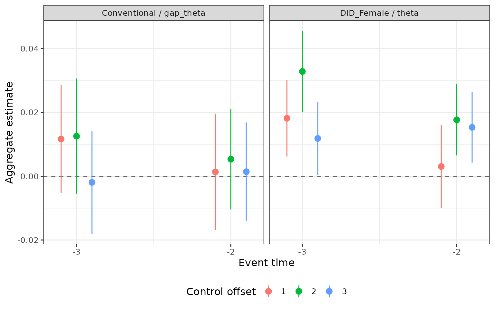
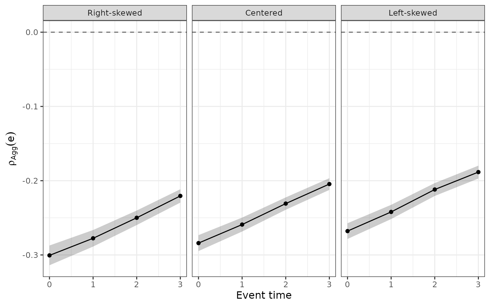

aggregate_estimands() averages the
treatment-group-specific estimates of
multiple_treatment_group_analysis() across treatment
groups, by event time (Section 5 of Leventer 2025, Identification of Child
Penalties). Symbols and row labels are in Notation and output, the estimators and
influence functions in Estimation.
Equation, section and theorem numbers refer to the main text; appendices
are referred to by name.
The examples use one simulated panel. Treatment groups 24-30 at event times 0-3 use control groups up to 34, so every treatment group has a cell at every event time.
library(childpen)
sim <- simulate_data(20000, 24:34)
res <- multiple_treatment_group_analysis(sim, 24:30, periods_post = 3,
periods_pre = NULL, verbose = FALSE)The result carries the person-level influence functions that
aggregate_estimands() reads, so it is passed on
unmodified.
1. Aggregate causal estimands
For event time
,
let
be the treatment groups that have an estimate. Since the control group
is
,
the condition is
,
the bound set by max_control_group. With
the expectation over the treatment distribution, Section 5.1 defines
The package replaces each treatment-group causal estimand by its 2x2
descriptive counterpart
and the treatment distribution by weights
(next section), so that
.
The rows of aggregate_estimands() are identified by
method, estimand and
agg_type:
method |
estimand |
agg_type |
aggregate | |
|---|---|---|---|---|
DID_Female, DID_Male
|
theta |
weighted_avg |
||
DID_Female, DID_Male
|
theta |
ratio_of_avgs |
and , averaged separately and divided | |
NTD |
rho_effect |
weighted_avg |
||
Conventional |
gap_theta |
weighted_avg |
||
TD_E_LOGS |
rho_effect |
weighted_avg |
under TD-E-LOGS | with |
TD, TD_PR, accounting rows of
NTD and TD_E_LOGS
|
gap_ATE, gap_theta_pre,
rho_obs, rho_cf,
share_parenthood, share_other
|
weighted_avg |
weighted average of the group-level row; no symbol in the paper | the group-level row |
The output has one row per event time, control_offset,
estimand, method and agg_type,
with est, se, n_groups (treatment
groups with positive weight), ci_l, ci_h,
t and p.
agg <- aggregate_estimands(res)
agg |>
filter(event_time == 2, estimand %in% c("theta", "gap_theta", "rho_effect"),
method %in% c("DID_Female", "Conventional", "NTD")) |>
select(method, estimand, agg_type, est, se, n_groups)
#> method estimand agg_type est se n_groups
#> 1 Conventional gap_theta weighted_avg -0.2273 0.004128 7
#> 2 DID_Female theta ratio_of_avgs -0.2990 0.002595 7
#> 3 DID_Female theta weighted_avg -0.3033 0.002533 7
#> 4 NTD rho_effect weighted_avg -0.2222 0.004226 7and . Writing , Section 5.1 shows that is also a weighted average of the , with weights Where weights by the treatment distribution, weights by the treatment distribution times the counterfactual APO, so treatment groups with higher counterfactual earnings receive more weight; the paper notes these are typically the later-treated groups. The paper takes as the preferable aggregate estimand for this reason (Section 5.1).
agg |>
filter(method == "DID_Female", estimand == "theta") |>
select(event_time, agg_type, est) |>
pivot_wider(names_from = agg_type, values_from = est)
#> # A tibble: 4 × 3
#> event_time ratio_of_avgs weighted_avg
#> <int> <dbl> <dbl>
#> 1 0 -0.317 -0.320
#> 2 1 -0.305 -0.309
#> 3 2 -0.299 -0.303
#> 4 3 -0.297 -0.302Aggregating before or after differencing. For the
gender gap, Section 5.1 aggregates the within-group difference,
,
rather than differencing the two within-gender aggregates,
.
The two coincide only when the male and female treatment distributions
are identical, and the second confounds differences in group-specific
effects with gender differences in the treatment distribution.
Accordingly Conventional (like NTD) uses
weights pooled over genders, while DID_Female and
DID_Male use weights within gender.
2. Weights
weights |
weight of treatment group in |
|---|---|
"sample" (default) |
the share of persons in the group:
,
where
counts persons of both genders with
.
For DID_Female and DID_Male, shares within
gender:
|
"uniform" or NULL
|
, with the number of groups in |
| a named numeric vector | proportional to the entry named , renormalized to sum to one over . Groups missing from the vector get weight zero, with a warning |
w_named <- setNames(dnorm(24:30, mean = 27, sd = 3), 24:30)
bind_rows(
sample = aggregate_estimands(res, weights = "sample", methods = "NTD"),
uniform = aggregate_estimands(res, weights = "uniform", methods = "NTD"),
named = aggregate_estimands(res, weights = w_named, methods = "NTD"),
.id = "weights"
) |>
filter(estimand == "rho_effect", event_time %in% c(0, 3)) |>
select(weights, event_time, est, se, n_groups)
#> weights event_time est se n_groups
#> 1 sample 0 -0.2767 0.005244 7
#> 2 sample 3 -0.1970 0.004096 7
#> 3 uniform 0 -0.2843 0.005427 7
#> 4 uniform 3 -0.2044 0.004060 7
#> 5 named 0 -0.2840 0.005471 7
#> 6 named 3 -0.2045 0.004017 7Groups that drop out. A treatment group has a cell
at event time
only if its control group
is at most max_control_group
(
in the paper). Groups beyond the bound drop out at later event times,
and n_groups records how many remain.
res_cap <- multiple_treatment_group_analysis(sim, 24:30, periods_post = 3, periods_pre = NULL,
max_control_group = 32, verbose = FALSE)
bind_rows(
`Inf` = aggregate_estimands(res, methods = "NTD"),
`32` = aggregate_estimands(res_cap, methods = "NTD"),
.id = "max_control_group"
) |>
filter(estimand == "rho_effect") |>
select(max_control_group, event_time, est, n_groups)
#> max_control_group event_time est n_groups
#> 1 Inf 0 -0.2767 7
#> 2 Inf 1 -0.2516 7
#> 3 Inf 2 -0.2222 7
#> 4 Inf 3 -0.1970 7
#> 5 32 0 -0.2767 7
#> 6 32 1 -0.2516 7
#> 7 32 2 -0.2360 6
#> 8 32 3 -0.2148 5With max_control_group = 32, group 30 has cells at
only and group 29 at
,
so
shrinks and the weights change with
.
As the footnote to eq. (10) notes (following Callaway and Sant’Anna
2021), a comparison of aggregates across
then combines variation in causal effects with a shift in the
composition of treatment groups. The composition is the same at every
event time when each group in the aggregate has a cell at each of them,
as with max_control_group = Inf above
(n_groups is 7 throughout).
3. Standard errors
Let
be the estimate of treatment group
,
its population share,
and
.
The influence function of
is (the aggregate estimator section of the appendix on estimation and
inference)
For the within-gender rows the share is
the joint share of gender
and group
,
with
in place of
.
With "uniform" or fixed weights the first term is absent;
with "sample" it accounts for the estimated shares. For
ratio_of_avgs the chain rule is applied to the ratio of the
two weighted averages, each with its share term, and the influence
function of share_other is minus that of
share_parenthood.
The group-level influence functions are summed per person across treatment groups before they are squared, with clusters at the person level, for person-age rows and persons. A person who serves as a control group member for several treatment groups therefore enters several terms of the same sum. The share term is put on the person-age scale with the average number of ages per person, which is exact for a balanced panel. The estimators and the influence functions of the group-level rows are in Estimation.
The table compares the se of
aggregate_estimands() under uniform weights with
,
the standard error if the group-level estimates were independent. The
latter is also the calculation used, with a warning, when
results has lost its influence-function attributes (for
example a table read back from a file).
agg_u <- aggregate_estimands(res, weights = "uniform", methods = "NTD") |>
filter(estimand == "rho_effect") |>
select(event_time, est, se)
indep <- res |>
filter(method == "NTD", estimand == "rho_effect") |>
group_by(event_time) |>
summarise(se_independent = sqrt(sum(se^2)) / n())
left_join(agg_u, indep, by = "event_time")
#> event_time est se se_independent
#> 1 0 -0.2843 0.005427 0.004457
#> 2 1 -0.2599 0.004748 0.004062
#> 3 2 -0.2309 0.004263 0.003828
#> 4 3 -0.2044 0.004060 0.0038084. Pre-treatment event times
With include_pre = TRUE, pre-treatment event times are
aggregated as well. A pre-treatment event time has one cell per control
group,
,
and each control_offset
is aggregated separately, so each row is the aggregate of the validation
estimates of one treatment-control distance. (After treatment
control_offset equals event_time + 1, and each
event time has one aggregate.) With the default pre = 1 and
periods_pre = K, the pre-treatment event times are
;
the baseline is
.
res_pre <- multiple_treatment_group_analysis(sim, 26:28, periods_post = 2, periods_pre = 2,
verbose = FALSE)
agg_pre <- aggregate_estimands(res_pre, include_pre = TRUE,
methods = c("DID_Female", "Conventional"))
agg_pre |>
filter(event_time < 0, agg_type == "weighted_avg") |>
mutate(row = paste(method, estimand, sep = " / "),
control_offset = factor(control_offset)) |>
ggplot(aes(x = event_time, y = est, ymin = ci_l, ymax = ci_h, color = control_offset)) +
geom_hline(yintercept = 0, linetype = "dashed", color = "grey40") +
geom_pointrange(position = position_dodge(width = 0.3)) +
facet_wrap(~ row) +
scale_x_continuous(breaks = -3:-2) +
labs(x = "Event time", y = "Aggregate estimate", color = "Control offset") +
theme(legend.position = "bottom")
Under no anticipation, a zero pre-treatment DID_Female
or DID_Male theta corresponds to
and a zero Conventional gap_theta to the
NTD-PT restriction at that age (Proposition 1; see Notation and output).
5. Comparing aggregates across strata
Studies compute aggregates within a stratum, such as a country or a parent type, and compare them across strata (Section 5.2). An aggregate depends on the treatment distribution: strata with different distributions of age at first birth give different aggregates even when the treatment-group-specific effects are the same, for example when parents have children earlier in one country than in another and early treatment groups receive more weight.
Figure 9 of the paper illustrates this. It keeps the
treatment-group-specific estimates of the effect of parenthood on the
gender earnings ratio fixed, and aggregates them with three treatment
distributions, normal densities with standard deviation 3 and means 26,
29 and 32 over the treatment groups
(right-skewed, centered, left-skewed). The same exercise with the
simulated group estimates res, with means 24, 27 and 30
over the treatment groups 24-30 (three years either side of the middle
of the range, as in the paper):
groups <- 24:30
means <- c("Right-skewed" = 24, "Centered" = 27, "Left-skewed" = 30)
W <- sapply(means, function(m) dnorm(groups, mean = m, sd = 3))
rownames(W) <- groups
round(prop.table(W, margin = 2), 3) # weights after normalization
#> Right-skewed Centered Left-skewed
#> 24 0.241 0.106 0.033
#> 25 0.228 0.140 0.060
#> 26 0.193 0.166 0.099
#> 27 0.146 0.175 0.146
#> 28 0.099 0.166 0.193
#> 29 0.060 0.140 0.228
#> 30 0.033 0.106 0.241
by_dist <- lapply(names(means), function(nm) {
w <- setNames(W[, nm], groups)
aggregate_estimands(res, weights = w, methods = "NTD") |>
filter(estimand == "rho_effect") |>
mutate(distribution = factor(nm, levels = names(means)))
}) |>
bind_rows()
ggplot(by_dist, aes(x = event_time, y = est, ymin = ci_l, ymax = ci_h)) +
geom_hline(yintercept = 0, linetype = "dashed", color = "grey40") +
geom_ribbon(alpha = 0.25) +
geom_line() +
geom_point() +
facet_wrap(~ distribution) +
labs(x = "Event time", y = expression(rho[Agg](e)))
The three panels average the same treatment-group estimates; only the weights differ. Figure 9 and the cross-country figure of the appendix on aggregate estimates (Israel, the UK and Germany) are in Replicating the paper.